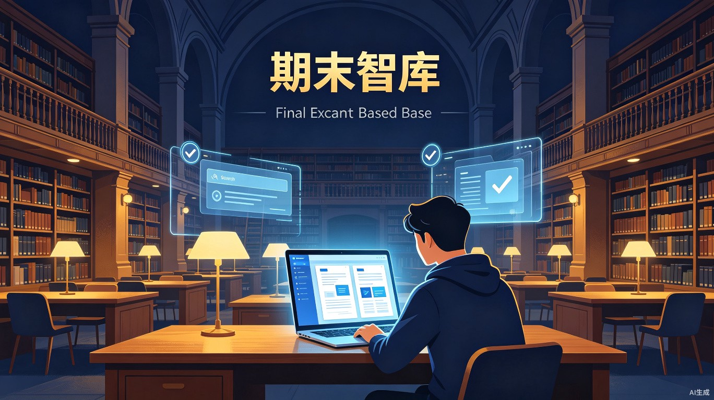
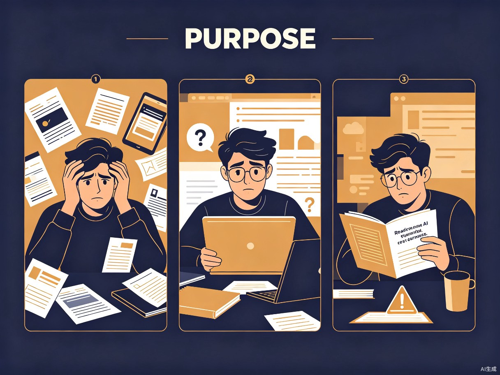
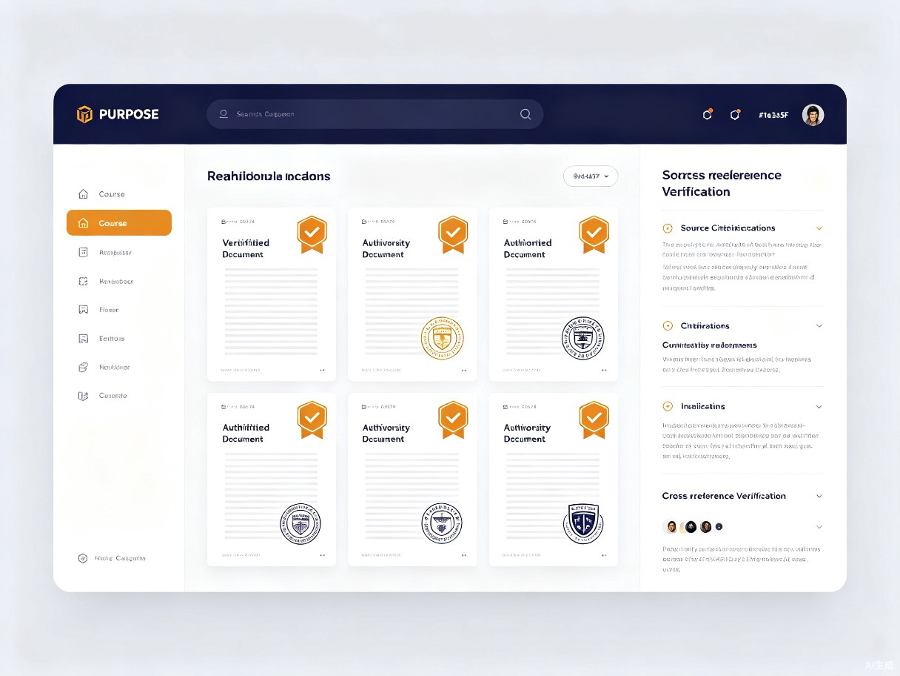

智能资料聚合与辨析平台
随着生成式AI的普及，学生越来越依赖AI工具查找学习资料。
然而，现有AI产品普遍存在"能检索、难辨析"的短板——
"期末智库"致力于让学生花最少的时间，获得最靠谱、最完整的复习资源。
当AI能检索却不能辨析，学生需要的是什么？
生成式AI的快速发展让信息检索变得前所未有的便捷。然而，现有AI产品普遍存在一个致命短板： 它们可以快速抓取并整合网络信息，却无法像专业学者那样判断内容的权威性、准确性和时效性， 甚至会将错误或过时的信息一本正经地呈现出来。
对于正处于期末备考关键期的学生而言，这种"能检索、难辨析"的缺陷直接影响复习质量。 学生真正需要的不是更多信息的堆砌，而是经过验证的、可信赖的复习资源。

聚焦高校学生群体，精准击破期末复习的核心难题
课件、笔记、往年试题、参考书目散落在不同平台和同学手中，搜集成本极高
网上搜索到的资料版本混乱，部分答案错误或过时，学生难以辨别真伪
通用AI工具生成的内容可能出现"幻觉"，引用不存在的文献或给出错误结论
期末周需要集中复习多门课程，急需系统化、可信赖的复习资料整合平台
对学术资料的权威性、准确性要求极高，需要经过交叉验证的专业文献支持
通过线上资源自主学习，需要可信赖的资料来源和系统的知识梳理工具
在信息爆炸的时代，让每一份复习资料都完整、精准、可靠

在信息爆炸的时代，学生期末备考的最大困境并非资料匮乏，而是信息过载与真伪难辨。 通用AI工具虽能快速检索海量内容，却缺乏对学术资料权威性、准确性的专业辨析能力， 导致学生耗费大量时间筛选，甚至误用错误信息。
整合多源资料，打破平台壁垒，构建统一的复习资源库
通过交叉比对、来源标注、可信度评分，筛选权威可靠内容
按课程、章节、知识点自动归类，构建清晰的知识体系
大幅缩短资料搜集时间，让学生将精力聚焦于真正重要的复习本身
实现"找得到、用得上、信得过"的高效备考体验，助力成绩提升
从需求到成果，三步构建你的专属复习资料库
输入课程或知识点，平台自动从多源抓取相关资料，涵盖课件、笔记、论文、试题
AI 辅助进行来源验证、交叉比对、时效性检测，标记权威内容与存疑信息
一键生成结构化的个人资料库，支持多种格式导出，轻松开启高效复习
"期末智库"不是又一个搜索工具，而是一个为学生量身打造的
可信资料中枢。
让技术承担繁杂的检索与初筛，让人的判断力聚焦于最关键的质量把关——
花最少的时间，获得最靠谱、最完整的复习资源。